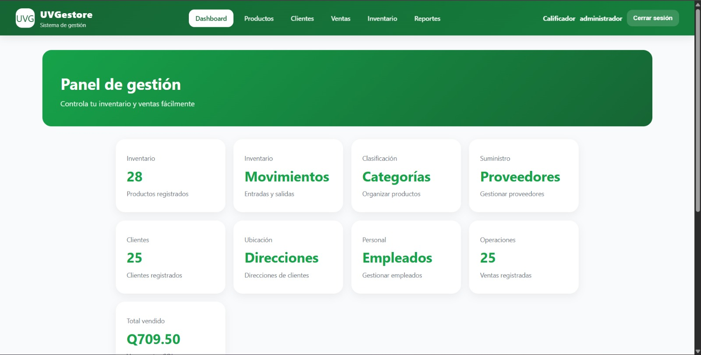

No. 003
Tipo Base de datos
Sistema de gestión
Sistema de gestión para una tienda, poniendo en práctica conocimientos de base de datos.
Tecnologías
Qué demuestra
El proyecto demuestra el manejo de base de datos con triggers, joins y consultas select. También integra un backend en Node.js/Express y un frontend construido en React + Vite. Todo se encuentra dentro de un contenedor de Docker para levantar el proyecto.
Reflexión
Este proyecto fue un reto para mí debido a que puso a prueba mis conocimientos en el manejo de bases de datos, consultas y seguridad de los datos.